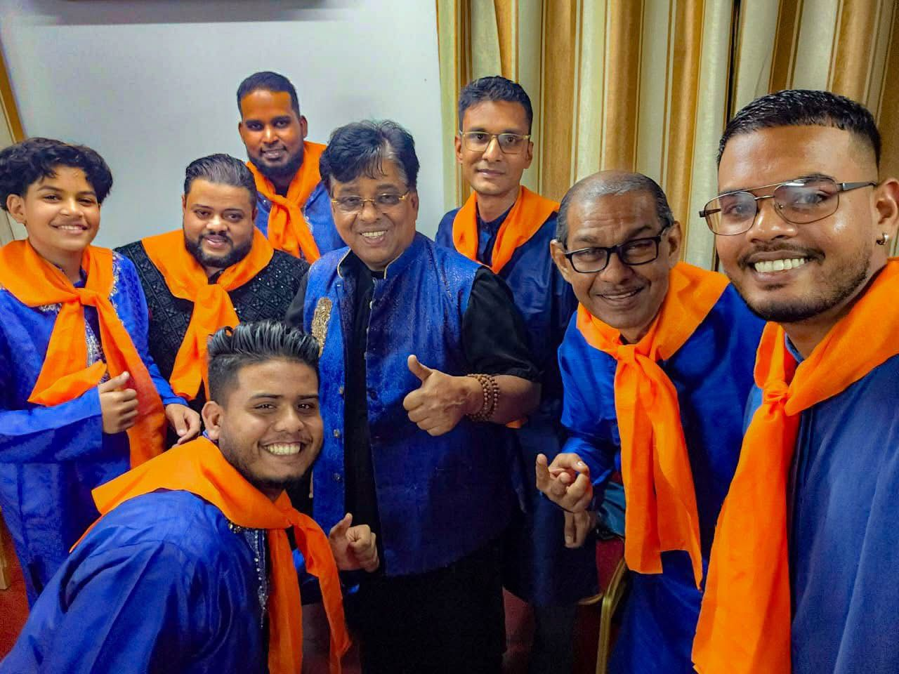
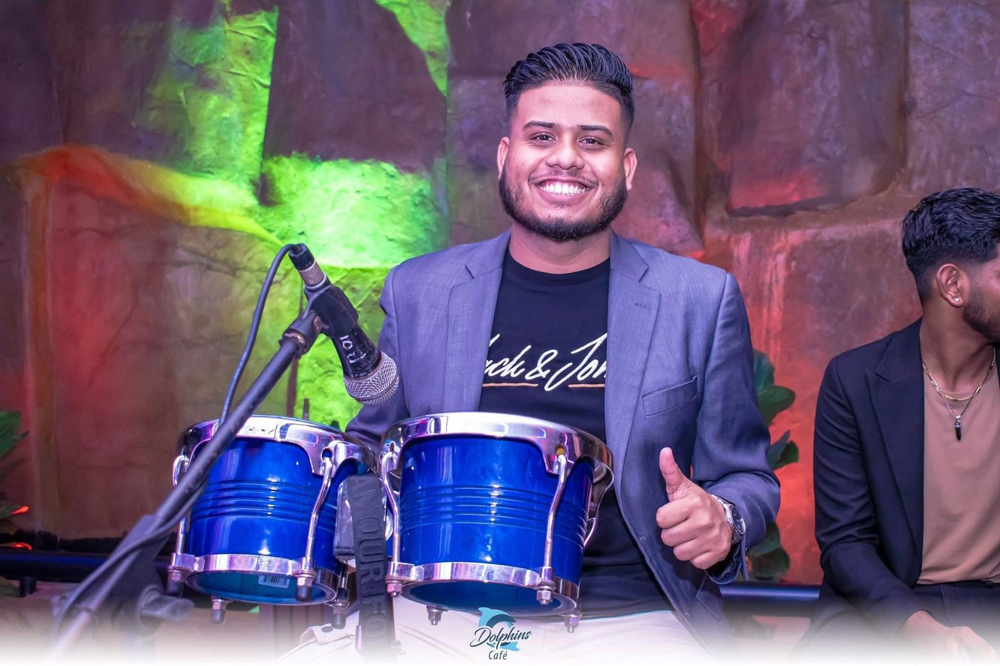

Wie ik ben
- Naam: Vyaas Kalloe
- Geboren: 16 mei 2005
- Leeftijd: 20 jaar
- Locatie: Paramaribo, Suriname
- Talen: Nederlands, Engels & Hindi
Mijn passie: Muziek
Naast mijn passie voor ICT en techniek, stroomt er muziek door mijn bloed. Sinds 2015 ben ik actief als muzikant en heb ik certificaten behaald voor instrumenten zoals de keyboard, harmonium, tabla en dholak.
Als studio operator bij VK Studio combineer ik mijn technische kennis met creatieve producties. Muziek is voor mij de ultieme vorm van expressie en ontspanning naast het werk in het datacenter.


